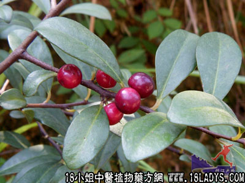

咸酸根(中药材植物名:酸藤果)(植物科目:紫金牛科)

别名：入地龙、大叶酸味根。
植物名：酸藤果。
生长环境：本品为藤状灌木或藤本。在山野间或路旁生长的阳性小藤本，耐干旱和酸性土壤。
分布：广东省各地均有。
入药部分：根。
采集期：全年。
自采地点：山岗。
性味：性温、味酸（刺激咽喉）。
功能：去毒、消肿、散瘀、止痛。
主治、用量和用法：1、闭经：干根1~2两，猪瘦肉适量，清水煎服；2、皮肤痕痒：干根适量煎水外洗；3、浊滋：干根适量，煎水外洗患处；4、跌打肿痛，配伍用。
验方1：（治跌打肿痛方）咸酸根5钱、金牛5钱、大还魂5钱、小还魂5钱、透骨消5钱、黑老虎5钱、清水四碗，煎成一碗服。
（方解）跌打肿痛，因于积瘀。本方药物皆为散瘀之品，而入地金牛兼祛风行气，黑老虎兼有祛风活血之效，加以大还魂行气，透骨消散骨节瘀，入咸酸根则温通之力更大。跌打肿痛患者用之有效。
（方歌）消肿散瘀咸酸根，入地金牛还还魂，透骨消熔黑老虎，温通散瘀效超群。
禁忌：孕妇忌用。
本文解释权归中药大全，本文地址：https://www.daquan.com/post/1522.html